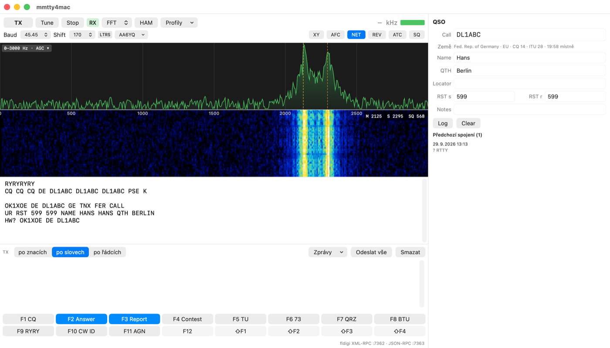
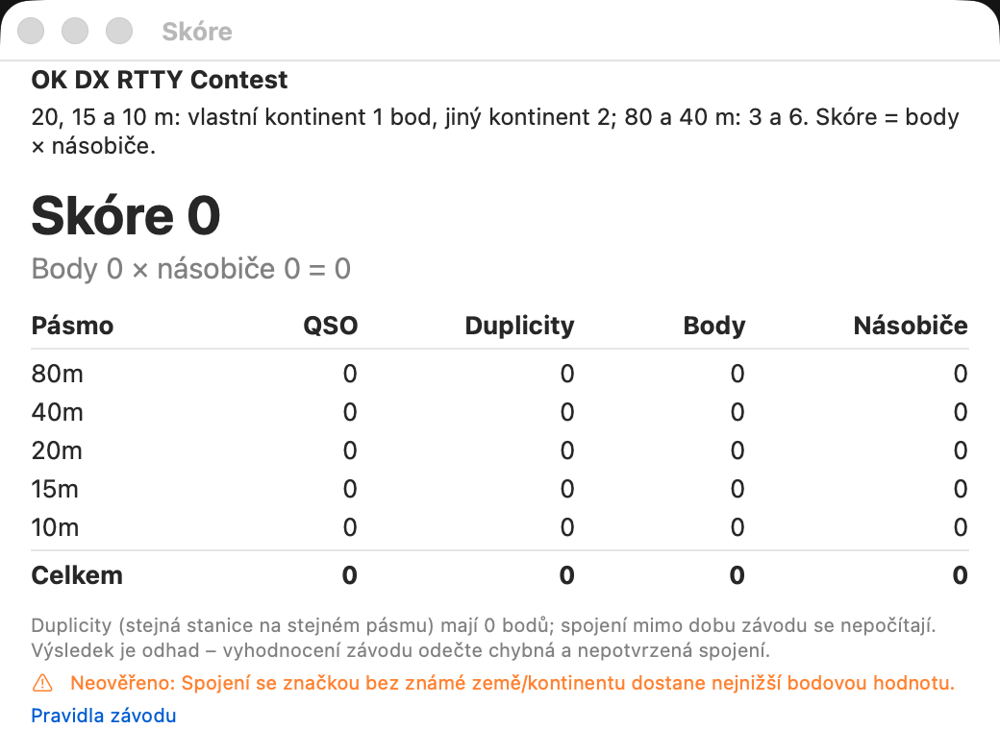

45,45
Bd Baudot, až 110
RTTY pro macOS přes zvukovou kartu — postavené na demodulátoru MMTTY, dělané pro závody.
Od prvního CQ po soubor Cabrillo – příjem, vysílání, log i skóre, s rádiem na USB kabelu a zvukovou kartou Macu.

